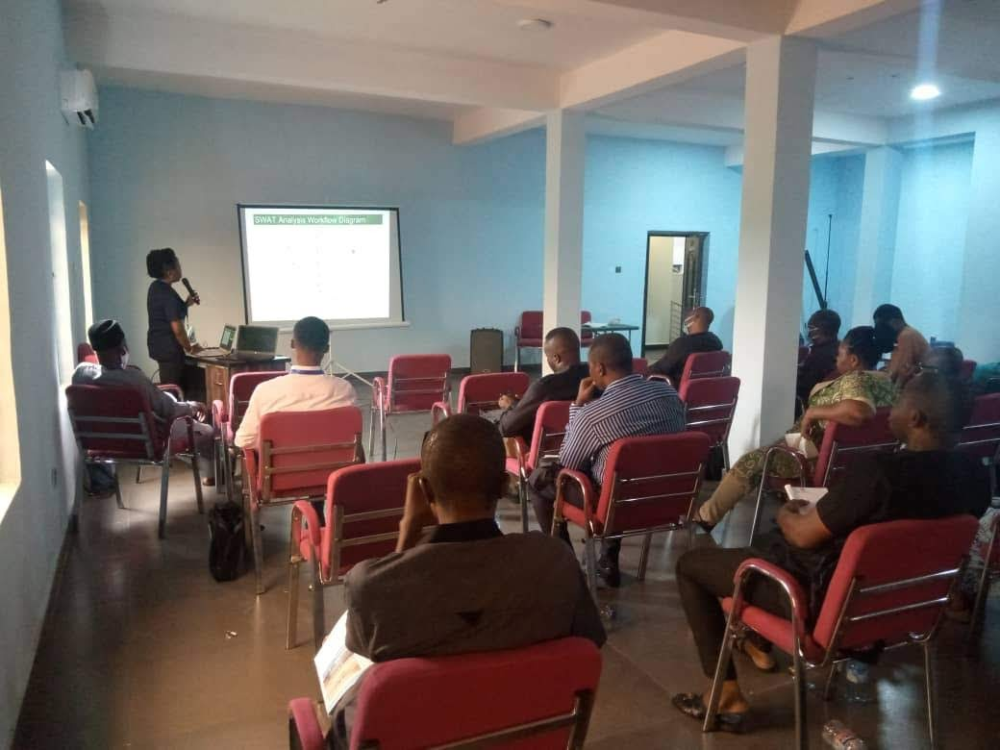
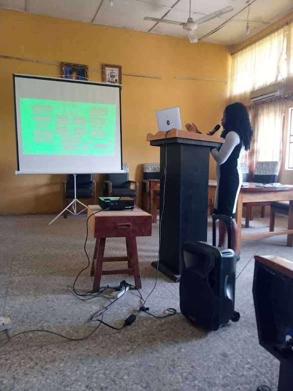

Gallery




Get to know me!
I am highly interested in grooming the next generation of Geospatial analysts from Nigeria and Africa as a whole in other to close the industry's learning gaps in the continent.
My GIS journey have accumulated over 5 years working experience across the Geospatial industry (Urban morphology, water resources management, biodiversity monitoring and university education) with excellent knowledge of ESRI ArcGIS desktop, ArcMap online, TerrSet (Clarke University), QGIS software, Google Earth Engine and Spatial data analysis using machine learning processes.
Psst: I love trying my hands out on different GIS and Remote Sensing software.
Psssst: I am building a web analytical tool which will be open to public users.
GIS and Remote Sensing Scientist
Organizations and Positions held
Nnamdi Azikiwe University · Full-time
African Women in GIS
Enugu Electricity Distribution Company
Schools Attended and Awarded Certificates
Biogeography/Climatology
Nnamdi Azikiwe University, Awka Nigeria
GeoInformation Technology (Remote Sensing option)
Federal University of Technology, Akure & African Regional Institute for Geospatial Science and Technology (AFRIGIST), Ile Ife Nigeria.
Geography and Meteorology
Nnamdi Azikiwe University, Awka Nigeria.
We provide GIS and Remote Sensing analysis across geo related disciplines
Open for research collaboration around the globe with cutting edge skills and analysis
Teaching GIS and Remote Sensing skills for beginners and intermediate learners
Open to give geo-based talks and presentations at webinars, conferences and seminars.